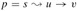

|
|
< Day Day Up > |
|
This section presents the Ford-Fulkerson method for solving the maximum-flow problem. We call it a "method" rather than an "algorithm" because it encompasses several implementations with differing running times. The Ford-Fulkerson method depends on three important ideas that transcend the method and are relevant to many flow algorithms and problems: residual networks, augmenting paths, and cuts. These ideas are essential to the important max-flow min-cut theorem (Theorem 26.7), which characterizes the value of a maximum flow in terms of cuts of the flow network. We end this section by presenting one specific implementation of the Ford-Fulkerson method and analyzing its running time.
The Ford-Fulkerson method is iterative. We start with f(u, v) = 0 for all u, v ∈ V, giving an initial flow of value 0. At each iteration, we increase the flow value by finding an "augmenting path," which we can think of simply as a path from the source s to the sink t along which we can send more flow, and then augmenting the flow along this path. We repeat this process until no augmenting path can be found. The max-flow min-cut theorem will show that upon termination, this process yields a maximum flow.
FORD-FULKERSON-METHOD(G, s, t) 1 initialize flow f to 0 2 while there exists an augmenting path p 3 do augment flow f along p 4 return f
Intuitively, given a flow network and a flow, the residual network consists of edges that can admit more flow. More formally, suppose that we have a flow network G = (V, E) with source s and sink t. Let f be a flow in G, and consider a pair of vertices u, v ∈ V. The amount of additional flow we can push from u to v before exceeding the capacity c(u, v) is the residual capacity of (u, v), given by
For example, if c(u, v) = 16 and f(u, v) = 11, then we can increase f(u, v) by cf (u, v) = 5 units before we exceed the capacity constraint on edge (u, v). When the flow f(u, v) is negative, the residual capacity cf (u, v) is greater than the capacity c(u, v). For example, if c(u, v) = 16 and f(u, v) = -4, then the residual capacity cf (u, v) is 20. We can interpret this situation as follows. There is a flow of 4 units from v to u, which we can cancel by pushing a flow of 4 units from u to v. We can then push another 16 units from u to v before violating the capacity constraint on edge (u, v). We have thus pushed an additional 20 units of flow, starting with a flow f(u, v) = -4, before reaching the capacity constraint.
Given a flow network G = (V, E) and a flow f, the residual network of G induced by f is Gf = (V, Ef), where
Ef = {(u, v) ∈ V × V : cf(u, v) > 0}.
That is, as promised above, each edge of the residual network, or residual edge, can admit a flow that is greater than 0. Figure 26.3(a) repeats the flow network G and flow f of Figure 26.1(b), and Figure 26.3(b) shows the corresponding residual network Gf.
The edges in Ef are either edges in E or their reversals. If f(u, v) < c(u, v) for an edge (u, v) ∈ E, then cf(u, v) = c(u, v) - f(u, v) > 0 and (u, v) ∈ Ef. If f(u, v) > 0 for an edge (u, v) ∈ E, then f (v, u) < 0. In this case, cf(v, u) = c(v, u) - f(v, u) > 0, and so (v, u) ∈ Ef. If neither (u, v) nor (v, u) appears in the original network, then c(u, v) = c(v, u) = 0, f(u, v)> = f(v, u) = 0 (by Exercise 26.1-1), and cf(u, v) = cf(v, u) = 0. We conclude that an edge (u, v) can appear in a residual network only if at least one of (u, v) and (v, u) appears in the original network, and thus
Observe that the residual network Gf is itself a flow network with capacities given by cf. The following lemma shows how a flow in a residual network relates to a flow in the original flow network.
Let G = (V, E) be a flow network with source s and sink t, and let f be a flow in G. Let Gf be the residual network of G induced by f, and let f' be a flow in Gf. Then the flow sum f + f' defined by equation (26.4) is a flow in G with value |f + f'| = |f| + |f'|.
Proof We must verify that skew symmetry, the capacity constraints, and flow conservation are obeyed. For skew symmetry, note that for all u, v ∈ V, we have
|
(f + f')(u, v) |
= |
f(u, v) + f'(u, v) |
|
= |
-f(v, u) - f'(v, u) |
|
|
= |
-(f(v, u) + f'(v, u)) |
|
|
= |
-(f + f')(v, u). |
For the capacity constraints, note that f'(u, v) ≤ cf(u, v) for all u, v ∈ V. By equation (26.5), therefore,
|
(f + f')(u, v) |
= |
f(u, v) + f'(u, v) |
|
≤ |
f(u, v) + (c(u, v) - f(u, v)) |
|
|
= |
c(u, v). |
For flow conservation, note that for all u ∈ V - {s, t}, we have
Finally, we have
Given a flow network G = (V, E) and a flow f, an augmenting path p is a simple path from s to t in the residual network Gf. By the definition of the residual network, each edge (u, v) on an augmenting path admits some additional positive flow from u to v without violating the capacity constraint on the edge.
The shaded path in Figure 26.3(b) is an augmenting path. Treating the residual network Gf in the figure as a flow network, we can increase the flow through each edge of this path by up to 4 units without violating a capacity constraint, since the smallest residual capacity on this path is cf(v2, v3) = 4. We call the maximum amount by which we can increase the flow on each edge in an augmenting path p the residual capacity of p, given by
cf (p) = min {cf(u, v) : (u, v) is on p}.
The following lemma, whose proof is left as Exercise 26.2-7, makes the above argument more precise.
The following corollary shows that if we add fp to f, we get another flow in G whose value is closer to the maximum. Figure 26.3(c) shows the result of adding fp in Figure 26.3(b) to f from Figure 26.3(a).
Let G = (V, E) be a flow network, let f be a flow in G, and let p be an augmenting path in Gf. Let fp be defined as in equation (26.6). Define a function f' : V × V → R by f' = f + fp. Then f' is a flow in G with value |f'| = |f| + |fp| > |f|.
Proof Immediate from Lemmas 26.2 and 26.3.
The Ford-Fulkerson method repeatedly augments the flow along augmenting paths until a maximum flow has been found. The max-flow min-cut theorem, which we shall prove shortly, tells us that a flow is maximum if and only if its residual network contains no augmenting path. To prove this theorem, though, we must first explore the notion of a cut of a flow network.
A cut (S, T) of flow network G = (V, E) is a partition of V into S and T = V - S such that s ∈ S and t ∈ T. (This definition is similar to the definition of "cut" that we used for minimum spanning trees in Chapter 23, except that here we are cutting a directed graph rather than an undirected graph, and we insist that s ∈ S and t ∈ T.) If f is a flow, then the net flow across the cut (S, T) is defined to be f(S, T). The capacity of the cut (S, T) is c(S, T). A minimum cut of a network is a cut whose capacity is minimum over all cuts of the network.
Figure 26.4 shows the cut ({s, v1, v2}, {v3, v4, t}) in the flow network of Figure 26.1(b). The net flow across this cut is
|
f(v1, v3) + f(v2, v3) + f(v2, v4) |
= |
12 + (-4) + 11 |
|
= |
19, |
and its capacity is
|
c(v1, v3) + c(v2, v4) |
= |
12 + 14 |
|
= |
26. |
Observe that the net flow across a cut can include negative flows between vertices, but that the capacity of a cut is composed entirely of nonnegative values. In other words, the net flow across a cut (S, T) consists of positive flows in both directions; positive flow from S to T is added while positive flow from T to S is subtracted. On the other hand, the capacity of a cut (S, T) is computed only from edges going from S to T. Edges going from T to S are not included in the computation of c(S, T).
The following lemma shows that the net flow across any cut is the same, and it equals the value of the flow.
Let f be a flow in a flow network G with source s and sink t, and let (S, T) be a cut of G. Then the net flow across (S, T) is f(S, T) = |f|.
Proof Noting that f (S - s, V) = 0 by flow conservation, we have
|
f(S, T) |
= |
f (S, V) - f(S, S) |
(by Lemma 26.1, part (3)) |
|
= |
f(S, V) |
(by Lemma 26.1, part (1)) |
|
|
= |
f(s, V) + f(S - s, V) |
(by Lemma 26.1, part (3)) |
|
|
= |
f(s, V) |
(since f(S - s, V) = 0) |
|
|
= |
|f|. |
An immediate corollary to Lemma 26.5 is the result we proved earlier-equation (26.3)-that the value of a flow is the total flow into the sink.
Another corollary to Lemma 26.5 shows how cut capacities can be used to bound the value of a flow.
The value of any flow f in a flow network G is bounded from above by the capacity of any cut of G.
Proof Let (S, T) be any cut of G and let f be any flow. By Lemma 26.5 and the capacity constraints,
An immediate consequence of Corollary 26.6 is that the maximum flow in a network is bounded above by the capacity of a minimum cut of the network. The important max-flow min-cut theorem, which we now state and prove, says that the value of a maximum flow is in fact equal to the capacity of a minimum cut.
If f is a flow in a flow network G = (V, E) with source s and sink t, then the following conditions are equivalent:
f is a maximum flow in G.
The residual network Gf contains no augmenting paths.
|f| = c(S, T) for some cut (S, T) of G.
Proof (1) ⇒ (2): Suppose for the sake of contradiction that f is a maximum flow in G but that Gf has an augmenting path p. Then, by Corollary 26.4, the flow sum f + fp, where fp is given by equation (26.6), is a flow in G with value strictly greater than |f|, contradicting the assumption that f is a maximum flow.
(2) ⇒ (3): Suppose that Gf has no augmenting path, that is, that Gf contains no path from s to t. Define
S = {v ∈ V : there exists a path from s to v in Gf}
and T = V - S. The partition (S, T) is a cut: we have s ∈ S trivially and t ∉ S be cause there is no path from s to t in Gf. For each pair of vertices u and v such that u ∈ S and v ∈ T, we have f (u, v) = c(u, v), since otherwise (u, v) ∈ Ef, which would place v in set S. By Lemma 26.5, therefore, |f| = f(S, T) = c(S, T).
(3) ⇒ (1): By Corollary 26.6, |f| ≤ c(S, T) for all cuts (S, T). The condition |f| = c(S, T) thus implies that f is a maximum flow.
In each iteration of the Ford-Fulkerson method, we find some augmenting path p and increase the flow f on each edge of p by the residual capacity cf(p). The following implementation of the method computes the maximum flow in a graph G = (V, E) by updating the flow f[u, v] between each pair u, v of vertices that are connected by an edge.[1] If u and v are not connected by an edge in either direction, we assume implicitly that f[u, v] = 0. The capacities c(u, v) are assumed to be given along with the graph, and c(u, v) = 0 if (u, v) ∉ E. The residual capacity cf(u, v) is computed in accordance with the formula (26.5). The expression cf(p) in the code is actually just a temporary variable that stores the residual capacity of the path p.
FORD-FULKERSON(G, s, t) 1 for each edge (u, v) ∈ E[G] 2 do f[u, v] ← 0 3 f[v, u] ← 0 4 while there exists a path p from s to t in the residual network Gf 5 do cf(p) ← min {cf(u, v) : (u, v) is in p} 6 for each edge (u, v) in p 7 do f[u, v] ← f[u, v] + cf(p) 8 f[v, u] ← -f[u, v]
The FORD-FULKERSON algorithm simply expands on the FORD-FULKERSON-METHOD pseudocode given earlier. Figure 26.5 shows the result of each iteration in a sample run. Lines 1-3 initialize the flow f to 0. The while loop of lines 4-8 repeatedly finds an augmenting path p in Gf and augments flow f along p by the residual capacity cf (p). When no augmenting paths exist, the flow f is a maximum flow.
The running time of FORD-FULKERSON depends on how the augmenting path p in line 4 is determined. If it is chosen poorly, the algorithm might not even terminate: the value of the flow will increase with successive augmentations, but it need not even converge to the maximum flow value.[2] If the augmenting path is chosen by using a breadth-first search (which we saw in Section 22.2), however, the algorithm runs in polynomial time. Before proving this result, however, we obtain a simple bound for the case in which the augmenting path is chosen arbitrarily and all capacities are integers.
Most often in practice, the maximum-flow problem arises with integral capacities. If the capacities are rational numbers, an appropriate scaling transformation can be used to make them all integral. Under this assumption, a straightforward implementation of FORD-FULKERSON runs in time O(E | f*|), where f* is the maximum flow found by the algorithm. The analysis is as follows. Lines 1-3 take time Θ(E). The while loop of lines 4-8 is executed at most |f*| times, since the flow value increases by at least one unit in each iteration.
The work done within the while loop can be made efficient if we efficiently manage the data structure used to implement the network G = (V, E). Let us assume that we keep a data structure corresponding to a directed graph G' = (V, E'), where E' = {(u, v) : (u, v) ∈ E or (v, u) ∈ E}. Edges in the network G are also edges in G', and it is therefore a simple matter to maintain capacities and flows in this data structure. Given a flow f on G, the edges in the residual network Gf consist of all edges (u, v) of G' such that c(u, v)- f[u, v] ≠ 0. The time to find a path in a residual network is therefore O(V + E') = O(E) if we use either depth-first search or breadth-first search. Each iteration of the while loop thus takes O(E) time, making the total running time of FORD-FULKERSON O(E | f*|).
When the capacities are integral and the optimal flow value | f*| is small, the running time of the Ford-Fulkerson algorithm is good. Figure 26.6(a) shows an example of what can happen on a simple flow network for which | f*| is large. A maximum flow in this network has value 2,000,000: 1,000,000 units of flow traverse the path s → u → t, and another 1,000,000 units traverse the path s → v → t. If the first augmenting path found by FORD-FULKERSON is s → u → v → t, shown in Figure 26.6(a), the flow has value 1 after the first iteration. The resulting residual network is shown in Figure 26.6(b). If the second iteration finds the augmenting path s → v → u → t, as shown in Figure 26.6(b), the flow then has value 2. Figure 26.6(c) shows the resulting residual network. We can continue, choosing the augmenting path s → u → v → t in the odd-numbered iterations and the augmenting path s → v → u → t in the even-numbered iterations. We would perform a total of 2,000,000 augmentations, increasing the flow value by only 1 unit in each.
The bound on FORD-FULKERSON can be improved if we implement the computation of the augmenting path p in line 4 with a breadth-first search, that is, if the augmenting path is a shortest path from s to t in the residual network, where each edge has unit distance (weight). We call the Ford-Fulkerson method so implemented the Edmonds-Karp algorithm. We now prove that the Edmonds-Karp algorithm runs in O(V E2) time.
The analysis depends on the distances to vertices in the residual network Gf. The following lemma uses the notation δf (u, v) for the shortest-path distance from u to v in Gf, where each edge has unit distance.
If the Edmonds-Karp algorithm is run on a flow network G = (V, E) with source s and sink t, then for all vertices v ∈ V - {s, t}, the shortest-path distance δf (s, v) in the residual network Gf increases monotonically with each flow augmentation.
Proof We will suppose that for some vertex v ∈ V - {s, t}, there is a flow augmentation that causes the shortest-path distance from s to v to decrease, and then we will derive a contradiction. Let f be the flow just before the first augmentation that decreases some shortest-path distance, and let f' be the flow just afterward. Let v be the vertex with the minimum δf' (s, v) whose distance was decreased by the augmentation, so that δf'(s, v) < δf(s, v). Let  be a shortest path from s to v in Gf', so that (u, v) ∈ Ef' and
Because of how we chose v, we know that the distance label of vertex u did not decrease, i.e.,
We claim that (u, v) ∉ Ef. Why? If we had (u, v) ∈ Ef, then we would also have
|
δf(s, v) |
≤ |
δf(s, u) + 1 |
(by Lemma 24.10, the triangle inequality) |
|
≤ |
δf' (s, u) + 1 |
(by inequality (26.8)) |
|
|
= |
δf' (s, v) |
(by equation (26.7)), |
which contradicts our assumption that δf' (s, v) < δf(s, v).
How can we have (u, v) ∉ Ef and (u, v) ∈ Ef'? The augmentation must have increased the flow from v to u. The Edmonds-Karp algorithm always augments flow along shortest paths, and therefore the shortest path from s to u in Gf has (v, u) as its last edge. Therefore,
|
δf(s, v) |
= |
δf(s, u) - 1 | |
|
≤ |
δf' (s, u) - 2 |
(by inequality (26.8)) |
|
|
= |
δf' (s, v) - 2 |
(by equation (26.7)), |
which contradicts our assumption that δf' (s, v) < δf(s, v). We conclude that our assumption that such a vertex v exists is incorrect.
The next theorem bounds the number of iterations of the Edmonds-Karp algorithm.
If the Edmonds-Karp algorithm is run on a flow network G = (V, E) with source s and sink t, then the total number of flow augmentations performed by the algorithm is O(V E).
Proof We say that an edge (u, v) in a residual network Gf is critical on an augmenting path p if the residual capacity of p is the residual capacity of (u, v), that is, if cf(p) = cf(u, v). After we have augmented flow along an augmenting path, any critical edge on the path disappears from the residual network. Moreover, at least one edge on any augmenting path must be critical. We will show that each of the |E| edges can become critical at most |V|/2 - 1 times.
Let u and v be vertices in V that are connected by an edge in E. Since augmenting paths are shortest paths, when (u, v) is critical for the first time, we have
δf(s, v) = δf (s, u) + 1.
Once the flow is augmented, the edge (u, v) disappears from the residual network. It cannot reappear later on another augmenting path until after the flow from u to v is decreased, which occurs only if (v, u) appears on an augmenting path. If f' is the flow in G when this event occurs, then we have
δf'(s, u) = δf'(s, v) + 1.
Since δf(s, v) ≤ δf'(s, v) by Lemma 26.8, we have
|
δf'(s, u) |
= |
δf'(s, v) + 1 |
|
≥ |
δf(s, v) + 1 |
|
|
= |
δf(s, u) + 2. |
Consequently, from the time (u, v) becomes critical to the time when it next becomes critical, the distance of u from the source increases by at least 2. The distance of u from the source is initially at least 0. The intermediate vertices on a shortest path from s to u cannot contain s, u, or t (since (u, v) on the critical path implies that u ≠ t). Therefore, until u becomes unreachable from the source, if ever, its distance is at most |V| - 2. Thus, (u, v) can become critical at most (|V|-2)/2 = |V|/2-1 times. Since there are O(E) pairs of vertices that can have an edge between them in a residual graph, the total number of critical edges during the entire execution of the Edmonds-Karp algorithm is O(V E). Each augmenting path has at least one critical edge, and hence the theorem follows.
Since each iteration of FORD-FULKERSON can be implemented in O(E) time when the augmenting path is found by breadth-first search, the total running time of the Edmonds-Karp algorithm is O(V E2). We shall see that push-relabel algorithms can yield even better bounds. The algorithm of Section 26.4 gives a method for achieving an O(V2 E) running time, which forms the basis for the O(V3)-time algorithm of Section 26.5.
In Figure 26.1(b), what is the flow across the cut ({s, v2, v4}, {v1, v3, t})? What is the capacity of this cut?
In the example of Figure 26.5, what is the minimum cut corresponding to the maximum flow shown? Of the augmenting paths appearing in the example, which two cancel flow?
Prove that for any pair of vertices u and v and any capacity and flow functions c and f, we have cf(u, v) + cf(v, u) = c(u, v) + c(v, u).
Recall that the construction in Section 26.1 that converts a multisource, multisink flow network into a single-source, single-sink network adds edges with infinite capacity. Prove that any flow in the resulting network has a finite value if the edges of the original multisource, multisink network have finite capacity.
Suppose that each source si in a multisource, multisink problem produces exactly pi units of flow, so that f(si, V) = pi. Suppose also that each sink tj consumes exactly qj units, so that f(V, tj) = qj, where Σi pi = Σj qj. Show how to convert the problem of finding a flow f that obeys these additional constraints into the problem of finding a maximum flow in a single-source, single-sink flow network.
Show that a maximum flow in a network G = (V, E) can always be found by a sequence of at most |E| augmenting paths. (Hint: Determine the paths after finding the maximum flow.)
The edge connectivity of an undirected graph is the minimum number k of edges that must be removed to disconnect the graph. For example, the edge connectivity of a tree is 1, and the edge connectivity of a cyclic chain of vertices is 2. Show how the edge connectivity of an undirected graph G = (V, E) can be determined by running a maximum-flow algorithm on at most |V| flow networks, each having O(V) vertices and O(E) edges.
Suppose that a flow network G = (V, E) has symmetric edges, that is, (u, v) ∈ E if and only if (v, u) ∈ E. Show that the Edmonds-Karp algorithm terminates after at most |V| |E|/4 iterations. (Hint: For any edge (u, v), consider how both δ(s, u) and δ(v, t) change between times at which (u, v) is critical.)
[1]We use square brackets when we treat an identifier-such as f-as a mutable field, and we use parentheses when we treat it as a function.
[2]The Ford-Fulkerson method might fail to terminate only if edge capacities are irrational numbers. In practice, however, irrational numbers cannot be stored on finite-precision computers.
|
|
< Day Day Up > |
|